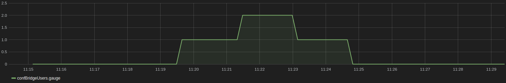

Utilizing the StatsD Dialplan Application
This page will document how to use the StatsD dialplan application. Statistics will be logged anytime that a call is made to an extension, within the dialplan, that uses the StatsD application.
Overview
StatsD is a daemon used to aggregate statistics by using different metrics and then summarizing these statistics in a way that can be useful to the users. One of StatsD's most useful capabilities is its ability to use a graphing back-end to display the statistics graphically. StatsD makes this very simple by accepting statistics through a short, one-line command and then grouping and arranging the statistics for you.
This StatsD application is a dialplan application that is used to send statistics automatically whenever a call is made to an extension that employs the application. The user must provide the arguments to the application in the dialplan, but after that, the application will send statistics to StatsD without requiring the user to perform anymore actions whenever a call comes through that extension.
Setup
To send statistics to a StatsD server, you first need to have a StatsD server able to accept the metrics you are sending. This does not have to be the same machine that contains your asterisk instance.
Installing StatsD on a machine will make the machine a StatsD server. A backend can then be installed on the same machine as a way of viewing the statistics that StatsD receives. StatsD already has the capability built in to support a backend. Most backends are graphs that you can view through a browser and allow you to track statistics that you have sent in real time.
After a StatsD server has been set up, all that is needed is to provide the IP address of the server and the port to statsd.conf. You will now have a StatsD server that can accept statistics and your dialplan application will send statistics directly to this server. If a backend is configured on the StatsD server, then the backend will automatically interact with StatsD when statistics are sent to the server.
If you wish to set up your own StatsD server, then you can download StatsD from here: https://github.com/etsy/statsd.
A list of available backends to be used is available here: https://github.com/etsy/statsd/wiki/Backends.
Requirements
Only a few requirements are needed for working with the StatsD application.
- You need a statsd capable backend to receive statistics.
- Build Asterisk with the res_statsd module. This provides the StatsD dialplan application.
- Configure and enable StatsD support in Asterisk's statsd.conf
Configuration
To send statistics from the dialplan application to a StatsD server, the only options that you need from statsd.conf are enabled and server.
- enabled- whether or not StatsD support is enabled in Asterisk. To use StatsD, this must be set to yes.
- server- the address of the StatsD server. A port is not required, and if one is not provided, will be used 8125 as the default port.
statsd.conf
[general] enabled = yes ; When set to yes, statsd support is enabled server = 127.0.0.1 ; server[:port] of statsd server to use. ; If not specified, the port is 8125 ;prefix = ; Prefix to prepend to all metrics ;add_newline = no ; Append a newline to every event. This is ; useful if you want to run a fake statsd ; server using netcat (nc -lu 8125)
If you wish to add a port, such as 8126, to the server address, then you would add it at the end of the address with a colon, like so: 127.0.0.1:8126.
extension.conf
[default] exten => 100,1,NoOp() same => n,StatsD(g,confBridgeUsers,+1,1) same => n,Set(CHANNEL(hangup_handler_push)=default,200,1); same => n,ConfBridge(1000) same => n,StatsD(g,confBridgeUsers,-1,1) same => n,Hangup() exten => 200,1,NoOp() same => n,StatsD(g,confBridgeUsers,-1,1) same => n,Hangup()
Example
The image below is an example of how calling into the dialplan provided above would send statistics to a StatsD server.
- The number of members in the conference initially is at 0. When someone calls into the conference, the gauge confBridgeUsers is incremented by 1, and the graph below shows the count of confBridgeUsers to be 1.
- When another person calls in and joins the conference, the count is incremented to 2, and the graph displays that two people are in the conference.
- When one person hangs up or is kicked from the conference, the count will decrement, showing that only one person remains in the conference.
- When the final person hangs up, the count of confBridgeUsers is decremented again, and the value of confBridgeUsers is again 0.

Note: this graph is not a part of StatsD, but is rather a backend that StatsD can be configured to use. This configuration would occur on the StatsD server.
{kind=link}
{kind=link}